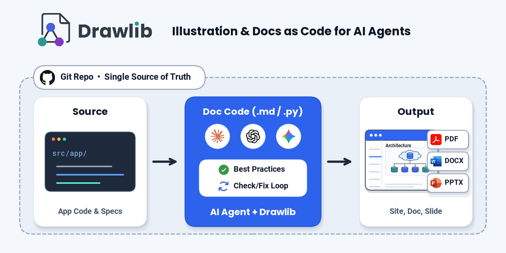
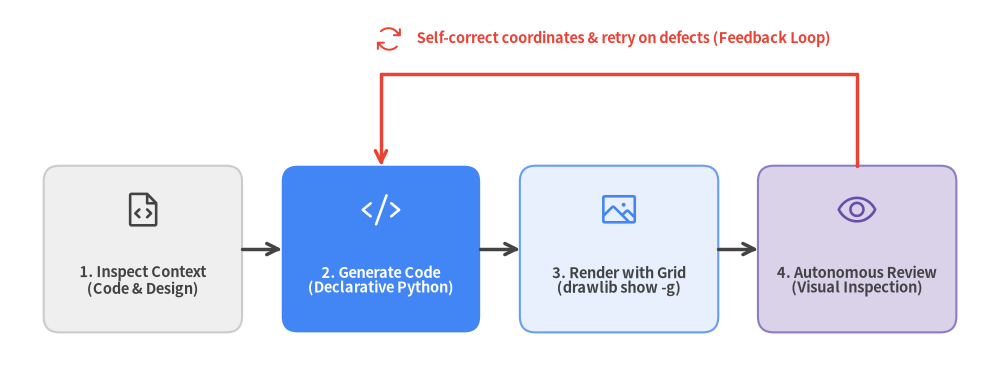
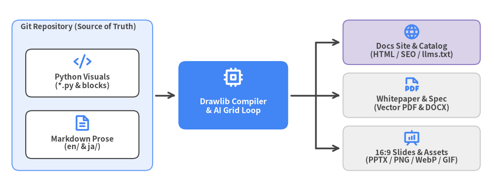
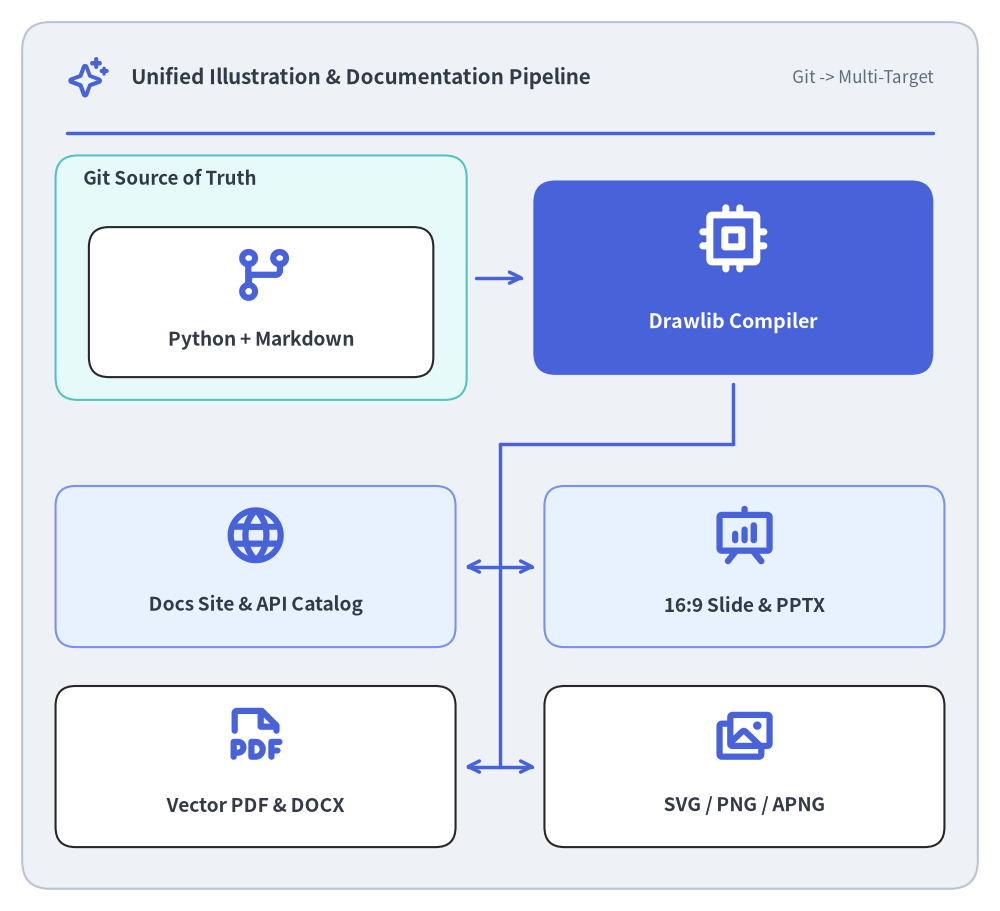
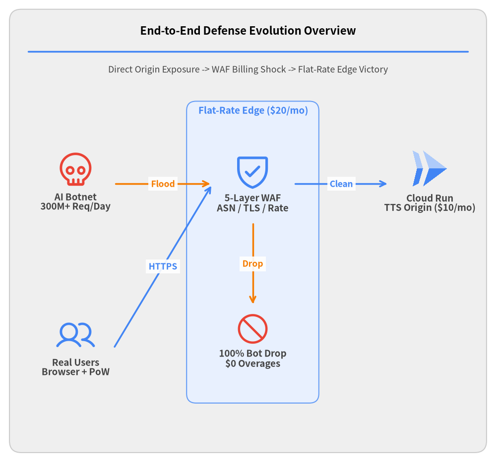
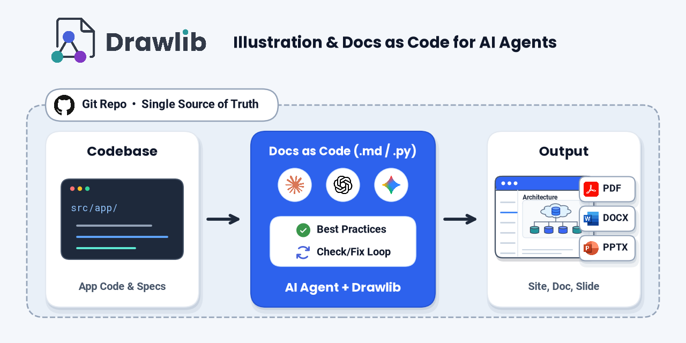

Drawlib Documentation
Official bilingual user guide covering drawing primitives, 34 icon suites, SmartArts, charts, diagrams, auto-layout graphs, animations, and AI workflows.
Illustration & Docs as Code
Production-ready documentation sites, searchable API catalogs, engineering whitepapers, 16:9 widescreen slide decks, and standalone Python illustrations compiled from version-controlled Markdown and Python into Web HTML, Vector PDF, Word (.docx), and PowerPoint (.pptx).

Hierarchical documentation portals with sidebar navigation, dark mode, i18n language switching, and SEO artifacts.
Official bilingual user guide covering drawing primitives, 34 icon suites, SmartArts, charts, diagrams, auto-layout graphs, animations, and AI workflows.

Internal software architecture specification detailing the layered drawing engine (L1–L4), SQLite AST cache, domain subsystems, and multi-target compilers.

Unofficial bilingual developer guide for FastAPI v0.162.2—spanning 8 chapters and 20 pages from quickstart endpoints to 100k+ LOC modular monoliths, OAuth2/JWT, native SSE, and OpenTelemetry.

Unofficial bilingual internal architecture guide to FastAPI v0.162.2—dissecting its 5-tier module hierarchy, APIRoute closure compiler, Dependant DI solver, Pydantic v2 bridge, and ASGI stack.
Structured reference portals with instant symbol filtering, typed badges, collapsible module trees, and visual code examples.

Complete bilingual Python API and CLI reference cataloging every public module, class, function, style token, and CLI subcommand across 29 pages.

Unofficial bilingual API and CLI reference for FastAPI v0.162.2 cataloging every public class, parameter descriptor, security scheme, SSE/telemetry API, and CLI command across 16 pages.
Multi-chapter linear specifications compiled into HTML, A4 Vector PDF, and editable MS Word.

Bilingual architectural whitepaper covering AI agent visual self-correction loops, SmartArts, declarative charts, and cloud diagrams.

Bilingual 16-chapter engineering handbook covering primitives, 34 icon suites, SmartArts, 10 charts, diagrams, auto-layout graphs, animations, and 5 project archetypes.
Interactive browser slide decks with speaker notes, compiled alongside vector PDFs and editable PowerPoint decks.

Bilingual 16:9 showcase presentation covering Drawlib's motivation, primitives, 34 icon suites, SmartArts, charts, diagrams, 5 project archetypes, and AI workflows.

Real-world serverless cloud security postmortem deck illustrating attack traffic waves, WAF billing traps, and 5-layer edge defense.
Batch-rendered multi-frame hero animations, brand marks, favicons, and Open Graph banners written as pure Python scripts.
Custom hero animations for personal websites and social media profiles authored with Drawlib and AI—exported in lossless APNG, Animated WebP, and dither-free GIF across light and dark themes.
Official horizontal logos, square icon marks, wordmarks, and favicons rendered across light, dark, solid, and transparent themes.

Three 1280 × 640 px Open Graph Protocol banner layouts illustrating Drawlib's Single Source of Truth workflow.
Automated diagnostic reports and technical outputs generated by external tools using Drawlib as their underlying document & illustration engine.

Comprehensive software health & security audit report generated by pni501 using Drawlib as its document engine—combining static AST metrics, layered DAG heatmaps, hermetic container runtime testing, and Trivy SCA.

Unofficial software health & architecture diagnostic of FastAPI v0.162.2 (93/100 Grade S) generated by pni501 using Drawlib—combining AST metrics, dependency DAGs, 3,216 hermetic tests, and Trivy SCA.
Unofficial bilingual (EN / JA) documentation suites demonstrating Drawlib across 6 ecosystems.
| Language | Target OSS | User Guide site |
Architecture site |
API Reference catalog |
Health Audit pni501 |
Source |
|---|---|---|---|---|---|---|
| Python | FastAPI v0.162.2 | fastapi.drawlib.com ↗ | Architecture ↗ | API ↗ | PNI501 (93/S) ↗ | GitHub ↗ |
| Java | MyBatis 3 v3.6.0 | mybatis3.drawlib.com ↗ | Architecture ↗ | API ↗ | PNI501 (90/S) ↗ | GitHub ↗ |
| Go | Cobra v1.10.2 | cobra.drawlib.com ↗ | Architecture ↗ | API ↗ | PNI501 (94/S) ↗ | GitHub ↗ |
| PHP | Slim 4 v4.15.3 | slim.drawlib.com ↗ | Architecture ↗ | API ↗ | PNI501 (94/S) ↗ | GitHub ↗ |
| JavaScript | htmx v4.0.1 | htmx.drawlib.com ↗ | Architecture ↗ | API ↗ | PNI501 (91/S) ↗ | GitHub ↗ |
| TypeScript | Zod v4.6.7 | zod.drawlib.com ↗ | Architecture ↗ | API ↗ | PNI501 (91/S) ↗ | GitHub ↗ |